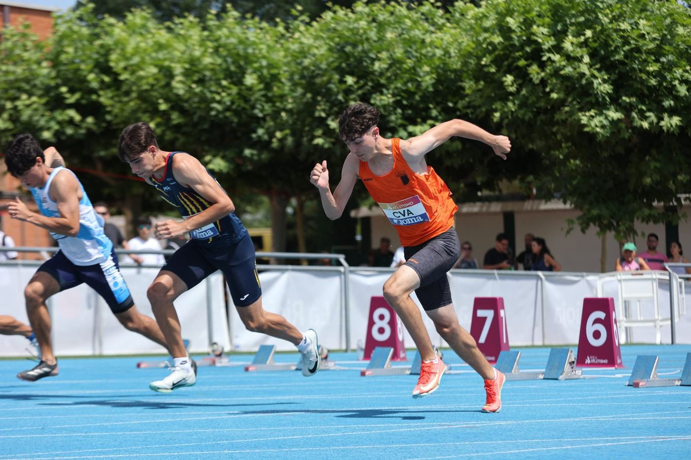
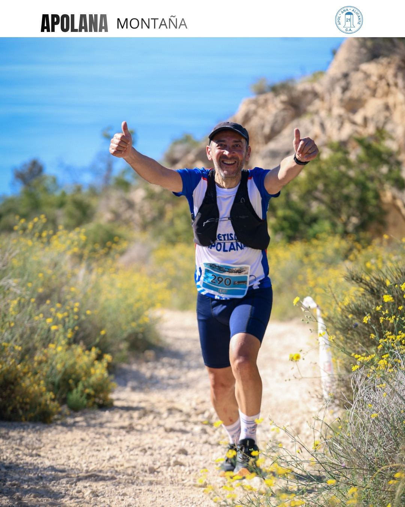

Atletismo en pista
Velocidad, vallas, medio fondo, fondo, saltos y lanzamientos. Hay quien viene a bajar su 400 y quien busca el Campeonato de España; detrás de los dos hay planificación individual.

Running
Dos grupos según el momento en el que estés: Madre Tierra para coger el hábito, La Tribu para buscar marca. En los dos hay entrenador en pista y plan escrito cada semana.

Natación
Grupos por nivel en el Tossal y en Vía Parque: técnica de los cuatro estilos, series de fondo y velocidad. En verano, piscina de 50 metros y aguas abiertas los sábados.

Montaña
Rutas por el Maigmó, el Puig Campana y las sierras que rodean Alicante. No hay ritmo obligatorio ni competición: hay salidas desde paseo familiar hasta travesía exigente.

Triatlón
Las tres disciplinas y, sobre todo, cómo encadenarlas para que las piernas respondan al bajar de la bici. La sección nació en 2011 con cinco socios y hoy pasa de cincuenta.


El Cubo
El gimnasio del club, junto a la pista: fuerza, core y prevención en grupos de doce. Aquí no se paga cuota al mes, se paga por bonos de uso, y las clases se reservan desde la app.
Ver El Cubo ›¿No sabes cuál es el tuyo?
Contesta cuatro preguntas y te decimos qué grupo te encaja. Y si ya lo tienes claro, hazte socio: es lo que da licencia, seguro y acceso a las instalaciones.